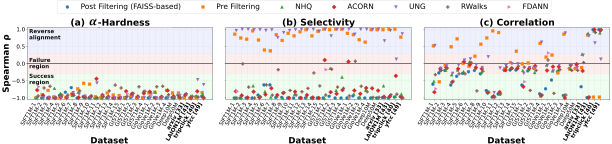
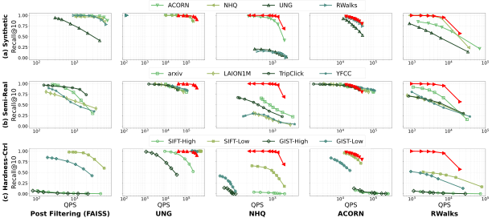
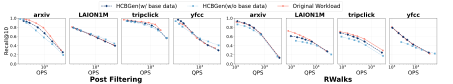

Filtered approximate nearest neighbor (FANN) search must satisfy both vector similarity and structured predicates, yet evaluations remain brittle because real hybrid workloads are rarely shareable and existing benchmarks rely on ad-hoc constructions. We propose α-Hardness, an execution-driven query-level hardness metric that models the conditional execution chain via the over-fetch factor and extends to strategy-conditioned settings. It aligns monotonically with empirical performance, unlike proxies such as selectivity or correlation.
We further introduce HCBGen, a hardness-controlled benchmark generator that uses α-Hardness as a control signal to synthesize workloads under coarse bias modes or to match a target hardness profile. Our experiments show that widely used benchmarks occupy a narrow, easy portion of the hardness spectrum, and that matching hardness distributions yields privacy-preserving proxy workloads that closely reproduce performance trends.
We model FANN execution as a post-filtering conditional chain: fetch top-ranked vector candidates, then scan until $K$ filter-satisfying results are found. The over-fetch factor $\alpha(q;K)$ is the rank of the $K$-th valid candidate, and hardness is the multiplicative cost of the two stages:
With $H_{\text{scan}} \propto C_{\text{scan}} \cdot m$, substituting $m = \alpha(q;K)$ gives:
Since $\alpha$ is unknown a priori, we estimate it index-free from global selectivity $s$ and a local-density correction $\rho(q)$:
so a globally selective (small $|V_f|$) or locally sparse filter both raise $\hat{\alpha}$. Finally, the score is strategy-conditioned by a monotone inversion — vector-centric strategies get harder with $\alpha$, while filter-centric ones get easier:
HCBGen separates a Label Generator (proposes candidate queries; supports Load and Generate base-data modes) from a Hardness Estimator (classifies the strategy's pruning family, scores candidates, and enforces acceptance through a regeneration loop). Two control families share this loop:
High / Low / Random skew the workload toward hard or easy queries via an adaptive cutoff.
Match-PDF reproduces a target hardness distribution by binning difficulty and filling target counts.

α-Hardness aligns monotonically with empirical performance (ρ closer to −1) across 25 datasets and six strategies, while selectivity and correlation are unstable or strategy-inconsistent.

Strategy rankings and trade-off shapes vary substantially across workloads. Results reported in original papers (red) align with easier regions, and High workloads expose sharp degradation.

Match-PDF proxy workloads reproduce the performance trends of the original workloads — even without access to the base data — enabling privacy-preserving benchmarking.
For more detailed experiments and findings, please refer to the full paper.
@article{lim2026fann,
author = {Lim, Mintaek and Kim, Dogeun and Kim, Minwoo and Do, Jaeyoung},
title = {Revisiting Filtered ANN Benchmarks: A Hardness-Controlled Benchmark
Generator for Realistic Evaluation},
journal = {Proceedings of the VLDB Endowment (PVLDB)},
volume = {14},
number = {1},
year = {2026},
}